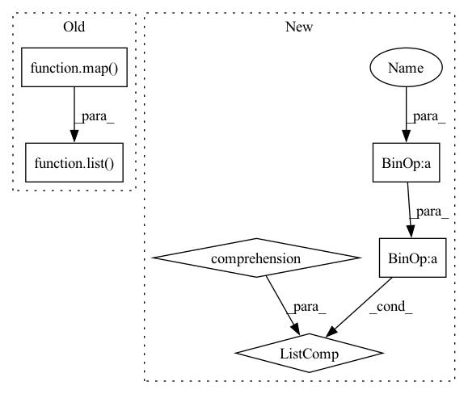

Pattern ID :15191
Before Change
gamma = 0.9
xs = [0, 0.25, 0.5, 0.75, 1, 0.75, 0.50, 0.25, 0, 0.25, 0.5, 0.75, 1]
lr_target_1 = list( map( lambda x: base_lr_1 + x[1] * diff_lr_1 * gamma**x[0], enumerate(xs)))
lr_target_2 = list(map(lambda x: base_lr_2 + x[1] * diff_lr_2 * gamma**x[0], enumerate(xs)))
lr_targets = [lr_target_1, lr_target_2]
momentum_target_1 = list(map(lambda x: max_lr_1 - x[1] * diff_lr_1 * gamma**x[0], enumerate(xs)))
momentum_target_2 = list(map(lambda x: max_lr_2 - x[1] * diff_lr_2 * gamma**x[0], enumerate(xs)))After Change
lr_target_1 = [base_lr_1 + x * diff_lr_1 * gamma**i for i, x in enumerate(xs)]
lr_target_2 = [base_lr_2 + x * diff_lr_2 * gamma**i for i, x in enumerate(xs)]
lr_targets = [lr_target_1, lr_target_2]
momentum_target_1 = [max_lr_1 - x * diff_lr_1 * gamma**i for i, x in enumerate(xs)]
momentum_target_2 = [max_lr_2 - x * diff_lr_2 * gamma**i for i, x in enumerate(xs)]
momentum_targets = [momentum_target_1, momentum_target_2]
scheduler = CyclicLR(self.opt, base_lr=[base_lr_1, base_lr_2],
max_lr=[max_lr_1, max_lr_2], step_size_up=4,In pattern: SUPERPATTERN
Frequency: 3
Non-data size: 6
Instances Fragment ID: 51382480
Project Name: pytorch/pytorch
Commit Name: 5b0f40048899e398d286fe7b55f297991f93ba2c
Time: 2020-10-19
Author: alexander.grund@tu-dresden.de
File Name: test/test_optim.py
M Class Name: TestLRScheduler
N Class Name: TestLRScheduler
M Method Name: test_cycle_lr_exp_range_mode(1)
N Method Name: test_cycle_lr_exp_range_mode(1)
M Parent Class: TestCase
N Parent Class: TestCase
M File Name: test/test_optim.py
N File Name: test/test_optim.py
M Start Line: 1269
M End Line: 1274
N Start Line: 1265
N End Line: 1274
Before Change
diff_lr = max_lr - base_lr
gamma = 0.9
xs = [0, 0.25, 0.5, 0.75, 1, 0.75, 0.50, 0.25, 0, 0.25, 0.5, 0.75, 1]
lr_target = list( map( lambda x: base_lr + x[1] * diff_lr * gamma**x[0], enumerate(xs)))
momentum_target = list(map(lambda x: max_lr - x[1] * diff_lr * gamma**x[0], enumerate(xs)))
lr_targets = [lr_target, lr_target]
momentum_targets = [momentum_target, momentum_target]
scheduler = CyclicLR(self.opt, base_lr=base_lr,After Change
gamma = 0.9
xs = [0, 0.25, 0.5, 0.75, 1, 0.75, 0.50, 0.25, 0, 0.25, 0.5, 0.75, 1]
lr_target = [base_lr + x * diff_lr * gamma**i for i, x in enumerate(xs)]
momentum_target = [max_lr - x * diff_lr * gamma**i for i, x in enumerate(xs)]
lr_targets = [lr_target, lr_target]
momentum_targets = [momentum_target, momentum_target]
scheduler = CyclicLR(self.opt, base_lr=base_lr,
max_lr=max_lr, step_size_up=4, Fragment ID: 51382488
Project Name: pytorch/pytorch
Commit Name: 5b0f40048899e398d286fe7b55f297991f93ba2c
Time: 2020-10-19
Author: alexander.grund@tu-dresden.de
File Name: test/test_optim.py
M Class Name: TestLRScheduler
N Class Name: TestLRScheduler
M Method Name: test_cycle_lr_exp_range_mode_one_lr(1)
N Method Name: test_cycle_lr_exp_range_mode_one_lr(1)
M Parent Class: TestCase
N Parent Class: TestCase
M File Name: test/test_optim.py
N File Name: test/test_optim.py
M Start Line: 1224
M End Line: 1226
N Start Line: 1222
N End Line: 1226
Before Change
elif T % 3 == 1:
ordering = list(map(lambda x: (x*((2*T+1)//3)) % T, range(T)))
else:
ordering = list( map( lambda x: (x*((T+1)//3)) % T, range(T)))
return inputs.reshape(N, T, C, H, W)[:,ordering,:,:,:].view(N, -1, H, W)
def get_input_reshape_func(split):
"""After Change
if T % 3 == 0:
ordering = [int(x*(T/3) + x//3) % T for x in range(T)]
elif T % 3 == 1:
ordering = [(x*((2*T+1)//3)) % T for x in range(T)]
else:
ordering = [(x*((T+1)//3)) % T for x in range(T)]
return inputs.reshape(N, T, C, H, W)[:,ordering,:,:,:].view(N, -1, H, W)
Fragment ID: 51382431
Project Name: kiyoon/pyvideoai
Commit Name: ef91a7d69cb67c6eef76a8769e89258d48767a9f
Time: 2021-07-30
Author: yoonkr33@gmail.com
File Name: exp_configs/ch_tcswap/sparsesample_OrderedTCswap_crop224_8frame_largejit_plateau_10scrop.py
M Class Name: AnonimousClass
N Class Name: AnonimousClass
M Method Name: _dataloader_shape_to_model_input_shape(1)
N Method Name: _dataloader_shape_to_model_input_shape(1)
M Parent Class:
N Parent Class:
M File Name: exp_configs/ch_tcswap/sparsesample_OrderedTCswap_crop224_8frame_largejit_plateau_10scrop.py
N File Name: exp_configs/ch_tcswap/sparsesample_OrderedTCswap_crop224_8frame_largejit_plateau_10scrop.py
M Start Line: 96
M End Line: 100
N Start Line: 96
N End Line: 100